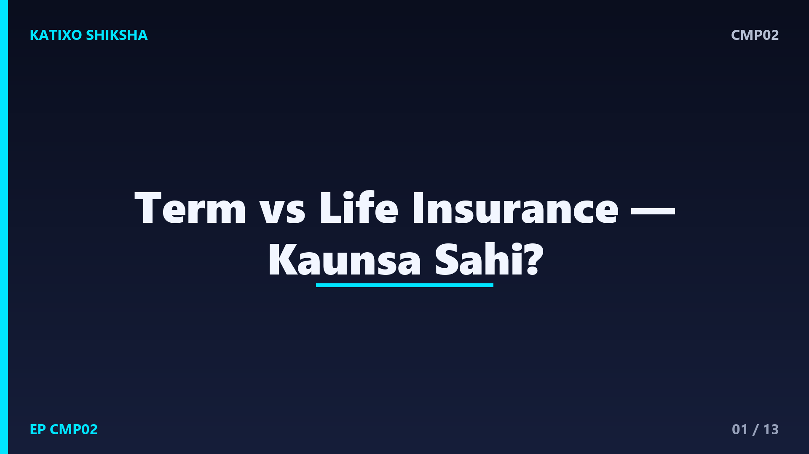
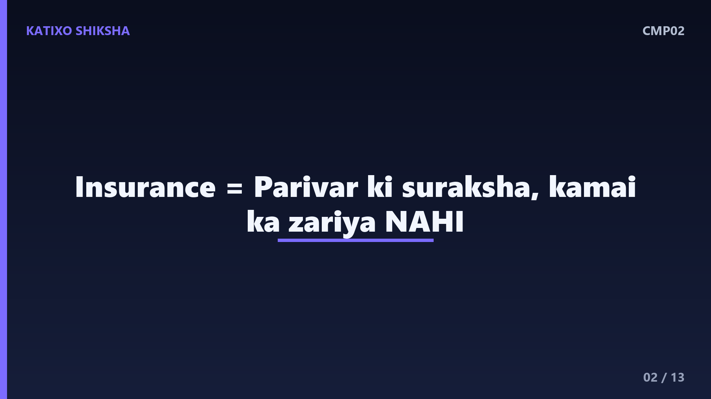
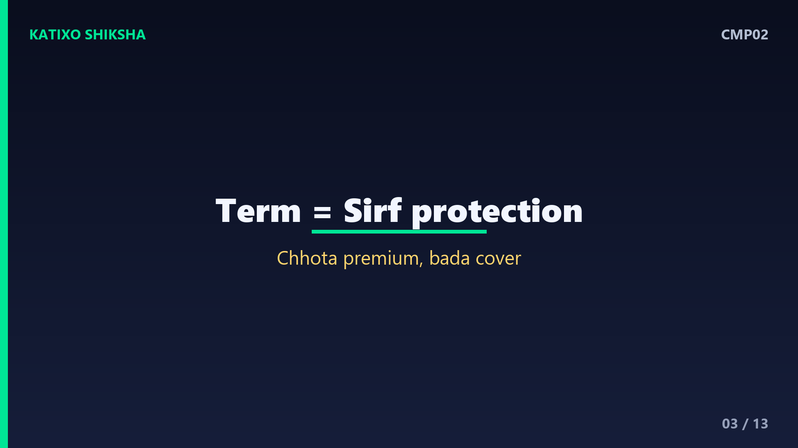
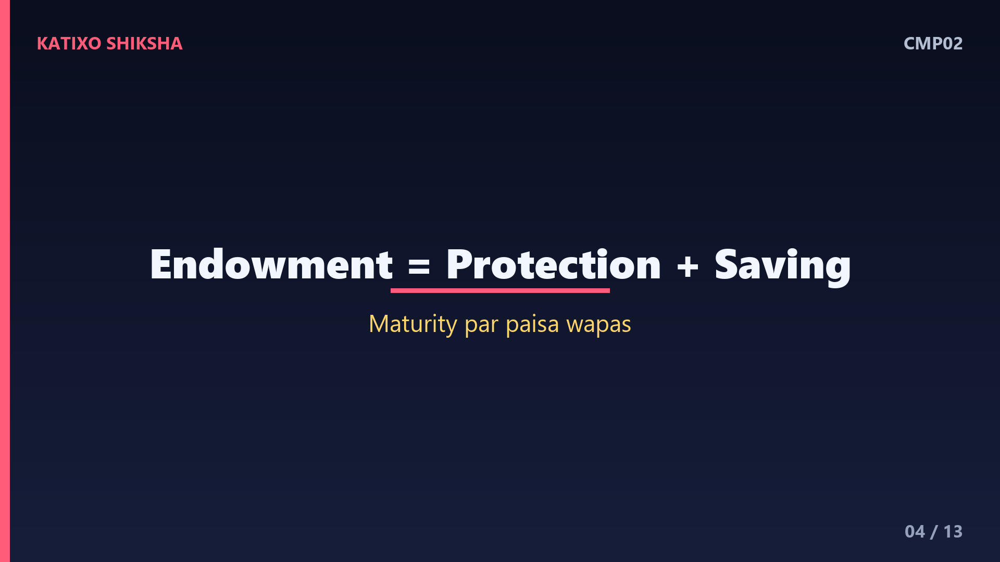
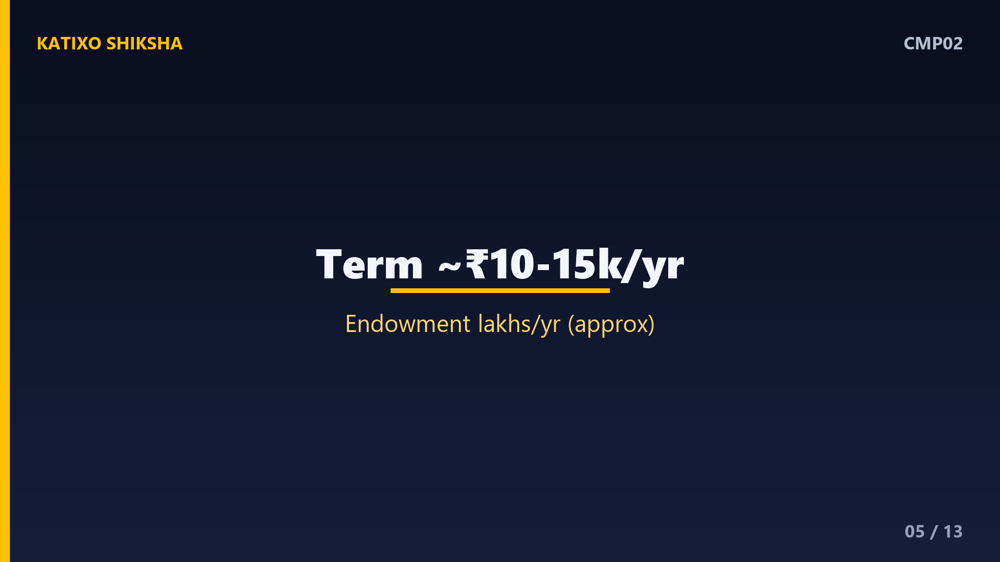
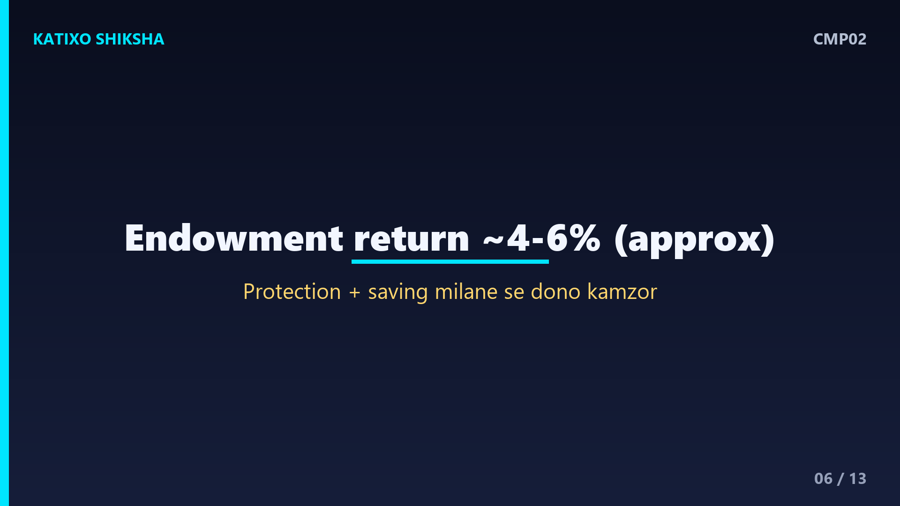
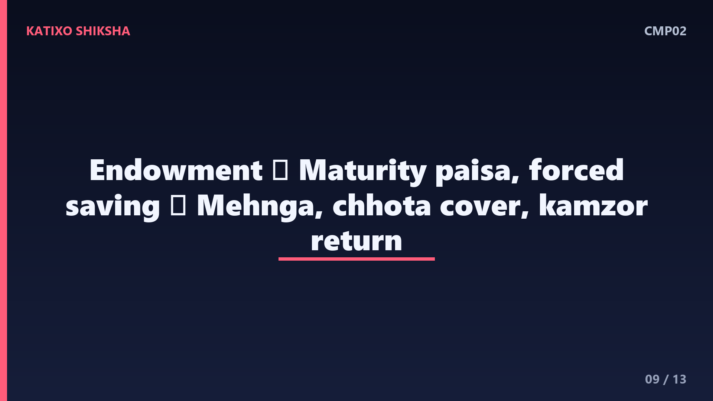
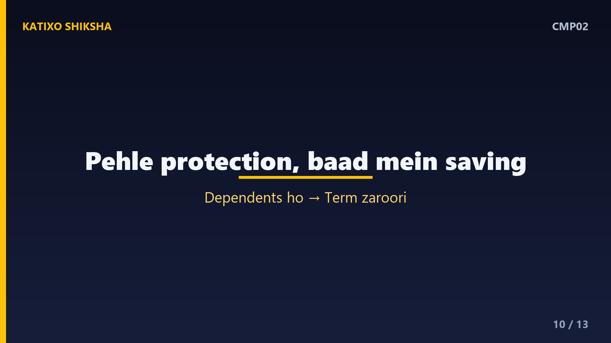
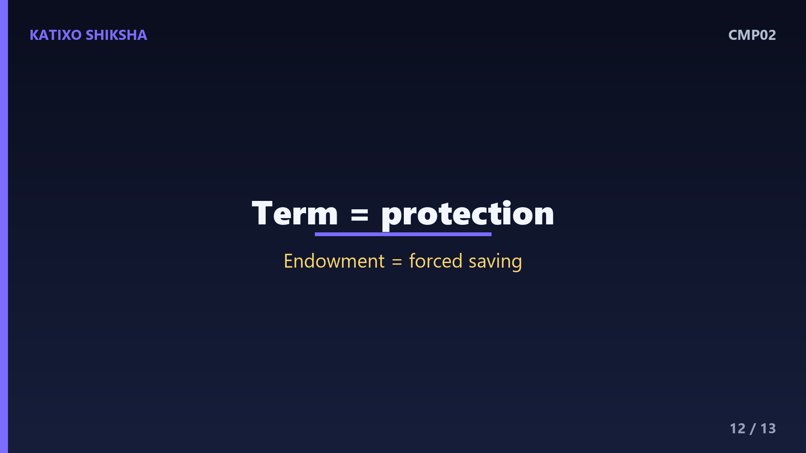

CMP02 — Term Insurance vs Life (Endowment) Insurance: Aapke liye Kaunsa Sahi?

Slide 1दोस्तों, जब भी कोई agent insurance बेचने आता है, तो दो बातें सुनने को मिलती हैं — एक policy जो सस्ती है पर पैसा वापस नहीं देती, और दूसरी जो महँगी है पर maturity पर पैसा लौटाती है। आप सोचते हो — आख़िर मेरे परिवार के लिए सही कौन सी है? Katixo KhojLab की इस comparison episode में हम term insurance और life यानी endowment insurance, दोनों को आसान भाषा में समझेंगे, खर्चा और फ़ायदे देखेंगे, और बताएँगे किसके लिए कौन सी सही है। ध्यान दें — ये general जानकारी है, financial advice नहीं।

Slide 2सबसे पहले बुनियादी बात — insurance का असली काम क्या है? Insurance का मक़सद है — अगर कमाने वाले इंसान को कुछ हो जाए, तो उसका परिवार पैसे की तंगी में ना आए। यानी ये एक सुरक्षा है, कोई कमाई का तरीक़ा नहीं। यहीं से दो रास्ते निकलते हैं। एक — pure protection, जो सिर्फ़ family को बड़ी रक़म देने का वादा करता है, वो है term insurance। दूसरा — protection plus saving मिलाकर, जो endowment या life insurance कहलाता है। दोनों का मक़सद अलग है, इसीलिए दोनों की कीमत भी अलग।

Slide 3अब term insurance समझो. ये सबसे सीधा-सादा insurance है। आप हर साल एक छोटा सा premium भरते हो, और बदले में company वादा करती है — अगर policy के दौरान आपकी मृत्यु हो जाए, तो आपके परिवार को एक बड़ी रक़म मिलेगी, जैसे एक करोड़ रुपये। पर अगर आप policy ख़त्म होने तक जीवित रहते हो — जो कि अच्छी बात है — तो आपको कुछ वापस नहीं मिलता। यानी term सिर्फ़ protection देता है, पैसा वापस नहीं। इसीलिए इसका premium बहुत कम होता है।

Slide 4अब endowment या life insurance. इसमें दो चीज़ें मिली होती हैं — एक तरफ़ life cover, और दूसरी तरफ़ saving। आप जो premium भरते हो, उसका कुछ हिस्सा protection में जाता है और बाक़ी company invest करती है। अगर policy के दौरान कुछ हो जाए तो परिवार को रक़म मिलती है, और अगर आप पूरा time जीवित रहते हो, तो maturity पर आपको jod-गई रक़म bonus के साथ वापस मिल जाती है। सुनने में बढ़िया लगता है — पर इसका premium term के मुक़ाबले कई गुना ज़्यादा होता है।

Slide 5अब असली फ़र्क़ — कीमत और cover का. एक example लें। मान लो एक तीस साल का सेहतमंद व्यक्ति एक करोड़ का cover चाहता है। Term plan में इतने बड़े cover का premium अक्सर साल का लगभग दस से पंद्रह हज़ार रुपये के आसपास आता है। पर endowment plan में एक करोड़ का cover लेने के लिए premium साल का लाखों रुपये तक जा सकता है, क्योंकि उसमें saving भी जुड़ी है। यानी एक ही पैसे में term से कई गुना बड़ा cover मिलता है। ये दाम सिर्फ़ अंदाज़ा हैं, उम्र और company से बदलते हैं।

Slide 6तो endowment से पैसा वापस मिलता है, फिर term बेहतर कैसे? असली खेल return का है। Endowment में जो पैसा invest होता है, उस पर मिलने वाला return आम तौर पर बहुत कम होता है, अक्सर सालाना चार से छह प्रतिशत के आसपास। यानी आपका पैसा बहुत धीरे बढ़ता है, कई बार तो महँगाई जितना भी नहीं। इसीलिए कई जानकार कहते हैं — protection और saving को मिलाने से दोनों कमज़ोर हो जाते हैं। फिर भी, ये decision हर किसी की situation पर निर्भर है।
Slide 7अब एक practical सोच — जिसे smart लोग अपनाते हैं. अगर आप term का सस्ता premium भरते हो और बाक़ी बचा हुआ पैसा अलग से अच्छी जगह invest करते हो, जैसे mutual fund या PPF, तो लंबे समय में आपके पास endowment के मुक़ाबले अक्सर ज़्यादा पैसा और साथ में बड़ा cover दोनों हो सकते हैं। इसी को कहते हैं — buy term, invest the rest। पर इसके लिए discipline चाहिए — बचा पैसा सच में invest करना पड़ता है, खर्च नहीं। याद रहे, ये general info है, financial advice नहीं।
Slide 8अब term के फ़ायदे और नुक़सान. फ़ायदे — बहुत कम premium में बहुत बड़ा cover, समझने में आसान, और परिवार को मज़बूत सुरक्षा। नुक़सान — अगर आप जीवित रहते हो तो कुछ वापस नहीं मिलता, जो कई लोगों को पैसे की बर्बादी लगता है, हालाँकि असल में वो आपकी सुरक्षा की कीमत है। एक और बात — term लेते समय सही और पूरी जानकारी देना ज़रूरी है, वरना claim में दिक़्क़त आ सकती है। कुल मिलाकर, सिर्फ़ protection के लिए term सबसे किफ़ायती है।

Slide 9अब endowment के फ़ायदे और नुक़सान. फ़ायदे — जीवित रहने पर maturity पर पैसा वापस मिलता है, एक forced saving की आदत बन जाती है, और कुछ लोगों को guaranteed रक़म से मानसिक शांति मिलती है। नुक़सान — premium बहुत ज़्यादा, cover बहुत छोटा, और return आम तौर पर कमज़ोर। यानी इतने पैसे में आपको ना तो बड़ा cover मिलता है, ना अच्छा return। तो ये उन्हीं के लिए ठीक है जिन्हें खुद से invest करने का भरोसा नहीं और guaranteed वापसी चाहिए।

Slide 10तो किसके लिए कौन सी सही? Term सही है — हर उस इंसान के लिए जिस पर परिवार की ज़िम्मेदारी है, जैसे कमाने वाला पति या पत्नी, जिनके बच्चे या माता-पिता उन पर निर्भर हैं। यही पहली ज़रूरत है। Endowment सोच सकते हो — अगर आपकी कमाई अच्छी है, आप पहले से बड़ा term cover ले चुके हो, और आपको खुद invest करने का भरोसा नहीं, तब एक हिस्सा guaranteed saving के लिए। पर पहले protection, बाद में saving — यही समझदारी का क्रम है।
Slide 11एक बहुत ज़रूरी चेतावनी. कभी भी अपने सबसे ज़रूरी protection को सिर्फ़ endowment पर मत छोड़ो। कई परिवार एक छोटी सी endowment policy को ही अपना पूरा insurance समझ बैठते हैं, और cover बहुत कम रह जाता है। अगर ऐसे में कमाने वाले को कुछ हो जाए, तो जो रक़म मिलती है वो परिवार के लिए नाकाफ़ी होती है। इसलिए सबसे पहले एक पर्याप्त term cover लो — आम तौर पर सालाना आमदनी का दस से पंद्रह गुना — उसके बाद ही बाक़ी चीज़ें सोचो।

Slide 12एक quick recap. Term — सस्ता, बड़ा cover, पर जीवित रहने पर कुछ वापस नहीं। Endowment — महँगा, छोटा cover, return कमज़ोर, पर maturity पर पैसा वापस। दोनों का मक़सद अलग है — term protection के लिए, endowment forced saving के लिए। ज़्यादातर परिवारों के लिए सही रास्ता है — पहले एक मज़बूत term cover, और बचा पैसा अलग से invest। पर हर किसी की situation अलग होती है, इसलिए ज़रूरत हो तो किसी भरोसेमंद financial planner से सलाह ज़रूर लें।
Slide 13तो दोस्तों, अब term और endowment का पूरा फ़र्क़ साफ़ है, और अगली बार कोई agent आए तो आप सही सवाल पूछ पाओगे। याद रखो — insurance का पहला काम है परिवार की सुरक्षा, return कमाना नहीं। अगर ये comparison काम आया तो Katixo KhojLab subscribe karein, घंटी दबाएँ, और इसे अपने परिवार-दोस्तों के साथ share करें ताकि वो भी सही फ़ैसला कर सकें। और एक बार फिर — ये general info है, financial advice नहीं, अपने पैसे का फ़ैसला सोच-समझकर लें। मिलते हैं अगली episode में।